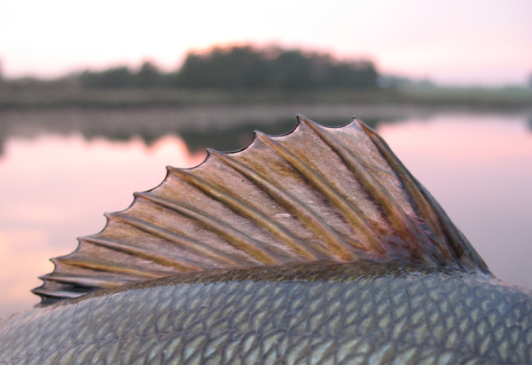
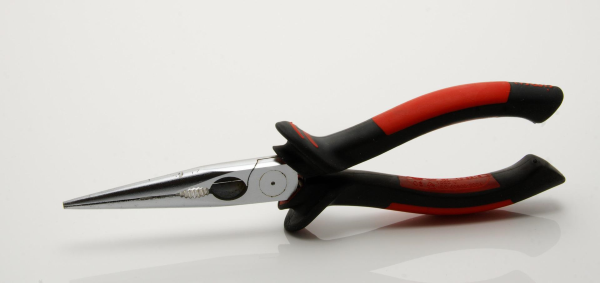

Tips & Tricks
Fishing Tournaments
There are fishing tournaments everywhere you just need to know where to look. Here is a DNR Fishing Tournaments website with everything you need to know.
Tips & Tricks
There are a lot of things that one can do to get better at fishing. Here on The Fish Net, we would like to make sure that everyone has the ability to be the best fisher that they can be. Here are some tips and tricks to improve your fishing game.
Fish Early Or Late
Fish often times are more active in darker areas. Fish like darker cooler places. This is why it is important to fish early or late in the day because their will be more fish that are swimming around.
Fish Where There Is Shade
Much like the above answer. Fish like cold and dark places. So if you are unable to fish earlier or later in the day, Finding a dark spot with shade would be best.
Fishing Lure Colors
You will never know what fish will prefer what color on that specific day. A good starting point would be to use a lure that's color matches the color of the water.
Fishing Lure Shape And Sizes
Make sure that you are using the appropriate shapes and sizes for the fish that you are trying to catch. If the lure is too big no fish will bite. If the lure is too small it can be deadly to the fish. So make sure you are using an appropriate size for that fish.
Do Your Research
Make sure to do some research before you try and go fishing. Luckily for you, The Fish Net is the perfect place to do that research.
Open Water vs. Ice Fishing
There are major differences when it comes to open water fishing and ice fishing. There also comes a few similarities. Understanding these differences and similarities will help you find the fish you are looking for and hook them. Here we will go through a couple topics to better your understanding of open water and ice fishing.
Gear
Having the correct gear is the first step to landing that big one. Most of the differences between ice fishing and open water fishing comes down to the gear. Open water fishing allows for easier mobility to cover more water. Some gear that will be needed for open water fishing will include:
- Boat (Optional)
- Fishing rod
- Net
- Bait
Ice fishing is less mobile; therefore, the gear will vary. Some of the necessary gear includes:
- Ice shack (Optional)
- Fishing rod
- Ice auger
- Bait
- Warmer clothes
Fish Behaviors
As the water temperatures change, so do the fish behaviors. The fish can feel the weather change just as much as we do. During the hotter times of the year, fish tend to be more active and even spawn. As the water warms up, smaller bait fish become more active, and this leads to the bigger fish following along to feed. However, when it gets too hot out, they may move into shaded areas or deeper water. As winter ice comes, some of the fish will become less mobile to save energy. This also means they will feed very little so getting them to bite may be a problem. Other fish like panfish or lake trout tend to stay just as lively in the winter and not change their feeding habits. Due to fish being less active in the winter you may need to move to find the fish, but when you find them you will be golden.
Other Fishing Content
Looking for extra some video guides or just some good fishing content to pass the time? Here is the spot to do just that. Below are some YouTube channels we really enjoy and we think you will too.
Googan Squad
Looking for more entertainment? The Googan Squad is a group of five fisherman that have their own YouTube channels. Now they have combined their efforts to create very well-made content consisting of all types of fishing content. The quality they bring with their videos is awesome. This group of fisherman keep the laughs coming and at the same time provide tips to help you.The video provided below is their series of fishing for sturgeon in Canada.
Flukemaster
Interested in bass fishing? Gene Jensen and his channel Flukemaster will give you the entire rundown on what to know when it comes to bass fishing. Gene is a great teacher and knows his stuff. His channel provides some of the most in depth information we have ever seen. Take a look at his intro video below to his channel and see if it is something you would be interested in.
billdancefishing
Bill Dance is a fishing legend that many have grew up watching on tv. His videos may be old, but they are still gold. His channel billdancefishing provides all his old episodes from 1968. The channel still uploads new content to this day. Need a laugh? Check out his blooper's series.
BlacktipH
Want a break from freshwater fishing? BlacktipH produces some of the best saltwater fishing content on YouTube. Josh Jorgensen's channel has accumulated a 3.93 million subscriber base and not just by luck. The channel's quality is through the roof and will leave you wanting more. The channel regularly features all kinds of celebrities on their fishing adventures. Here is their video of them taking out Rob Gronkowski to catch some sharks and groupers.
Handling Fish
Once you catch a fish, it is important to handle to fish correctly for the fish's safety, as well as yours. To effectively grab hold a fish you have first have to understand the kind of dorsal fins, mouth, and mucus they have
Avoiding Dorsal Fins
Fish such as panfish and walleye, have dorsal fins with spines that stick out of the fin itself. The dorsal fin is located on the back of the fish and some may have more than one even. If the fish is very squirmy it can be very easy to get poked by one of these. The best way to avoid this is to wrap your hand around the head of the fish and slide it down over the dorsal fin. This will press the fin done onto to the body of the fish without hurting it or your hand. Other fish like musky have soft spines in their dorsal fins and don't stick up when out of the water.
Handling by the mouth
Bass and a few other fish have protruding moths that extend out. When a fish has a mouth like this it is safe to hold them by their mouth without hurting them. The key is to use to grab right on the middle of their bottom lip, pinching with your thumb and pointer finger. It is important when holding them like this to keep the fish vertical. If held like this and positioned horizontally the fish's jaw may be damaged if it is heavy enough. There are a few fish that have teeth such as muskies and northern pikes. It should go without saying but avoid sticking your hand in their mouths as these predatory fish have teeth for a reason.
Skin mucus
You may notice some fish can be very slimy. This is called skin mucus and it is there to protect the fish against pathogens and disease. All fish have this in varying amounts. When holding a fish this mucus will rub off onto your hands if dry. For a lot of fish this will not affect them as badly but still good to avoid if possible. Trout, however, can easily be harmed if this mucus is removed. It is best to handle them within a net in the water. If this is not possible then try to wet your hands before handling.
Removing hooks and releasing
Once you safely have hold of the fish. You must remove the hook. This will take practice but doing quickly ensures the fish’s safety. Using your hand is usually the easiest but if the hook is out of reach a needle nose pliers will do the job. Make sure to have a good grip on the hook and pull straight out of where the hook penetrated. You may think trying to do this slowly will hurt the fish less but if the hook is in there good this will do more damage. Using a quick tug this will pop the hook out the fastest and avoid damaging the mouth. If you had to remove the hook with the fish out of the water, it may need some time to recover depending on the amount of time it was out of water. So do not just drop the fish back in the water but keep hold of the fish and move it in a figure eight within the water to push water in its mouth and out the gills. It is a big misconception that you should move it back and forth, but all this does is push water back and forth in the gills and this does no good. Keep doing this and at some point, the fish will kick and let you know when it is good to go. This is usually not needed with smaller fish, but with bigger fish that exert more energy when being reeled in.